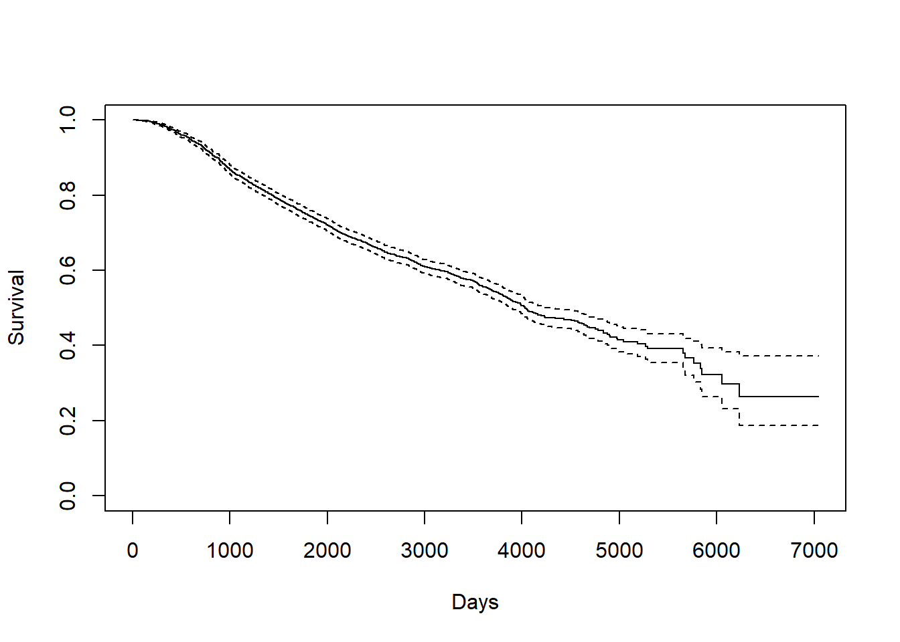
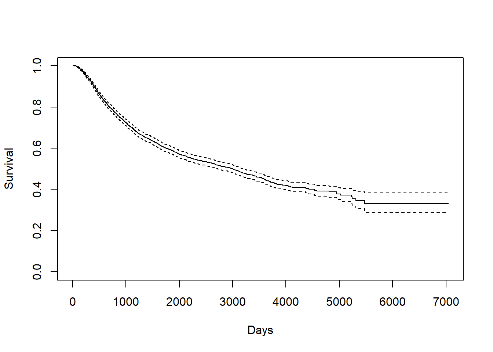
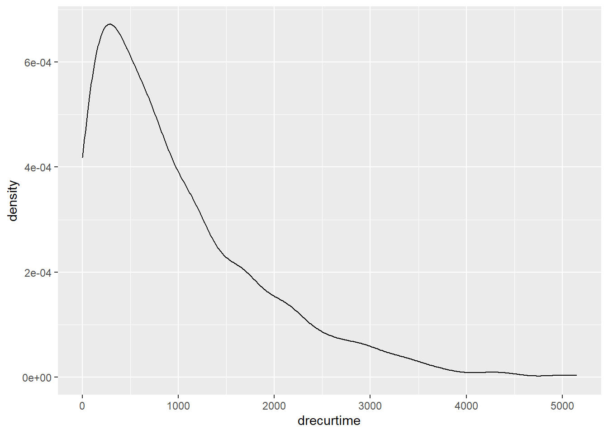

3.2 Kaplan-Miere estimator of the entire dataset
Generally speaking, Kaplan-Miere curve is a non-parametric estimator of the survival function which takes censoring into account. Its y-axis measures \(P(X \leq k)\) for various values of \(k\).
3.2.0.1 Death Time
KM_d <- survfit(Surv(dtime, death) ~ 1, data = rotterdam)
plot(KM_d, conf.int = TRUE, xlab="Days", ylab="Survival")
Kaplan-Meier curve also helps us finding the median and mean estimate. For median, we can directly find it from the survfit object KM_d. For mean, we need to calculate the area under the Kaplan-Meier curve.
## Call: survfit(formula = Surv(dtime, death) ~ 1, data = rotterdam)
##
## n events median 0.95LCL 0.95UCL
## 2982 1272 4033 3888 4309# mean
# AUCKM stands for "Area Under Curve Kaplan Meier":
AUCKM = function(survobj,duration)
{
base=c(0,summary(survobj)$time,max(duration))
heights=c(1,summary(survobj)$surv)
new=c()
for(i in 1:length(heights)) { new=c(new,(base[i+1]-base[i])*heights[i]) }
c(sum(new))
}
AUCKM(KM_d,rotterdam$dtime)## [1] 4099.795The overall mean survival time till death for breast cancer is 4099.795 days, and the overall median survival time till death for breast cancer is 4033 days. Both of them are approximately 7 years.
We can find that the mean and median we calculated above is much longer than the mean and median of the variable dtime itself, because a lot of data point are right-censored:
## [1] 2605.34## [1] 2638.53.2.0.2 Recurrence Time
KM_r <- survfit(Surv(rtime, recur) ~ 1, data = rotterdam)
plot(KM_r, conf.int = TRUE, xlab="Days", ylab="Survival")
We can find the mean and median in a similar way:
## Call: survfit(formula = Surv(rtime, recur) ~ 1, data = rotterdam)
##
## n events median 0.95LCL 0.95UCL
## 2982 1518 2983 2719 3193## [1] 3588.535The overall mean survival time till recurrence for breast cancer is 3588.535 days, which is approximately 10 years. The overall median survival time till recurrence for breast cancer is 2983 days, which is approximately 8 years. Notice here our mean is much greater than the median, and this indicates that our rtime should be right-skewed.

3.2.0.3 Survival time after recurrence
KM_dr <- survfit(Surv(drecurtime, death) ~ 1, data = rotterdam_recur)
plot(KM_dr, conf.int = TRUE, xlab="Days", ylab="Survival")
## Call: survfit(formula = Surv(drecurtime, death) ~ 1, data = rotterdam_recur)
##
## n events median 0.95LCL 0.95UCL
## 1518 1077 894 815 949## [1] 1407.135The overall mean survival time after rucurrence till death for breast cancer is 1407.135 days, which is approximately a little less than 4 years. The overall median survival time after rucurrence till death for breast cancer is 894 days, which is approximately 2 years and a half. Here, the mean is also greater than the median, also indicating right-skewness:

Since a Kaplan-Miere estimator is unbiased, we could view the mean and median as being very close to the true value of survival time.